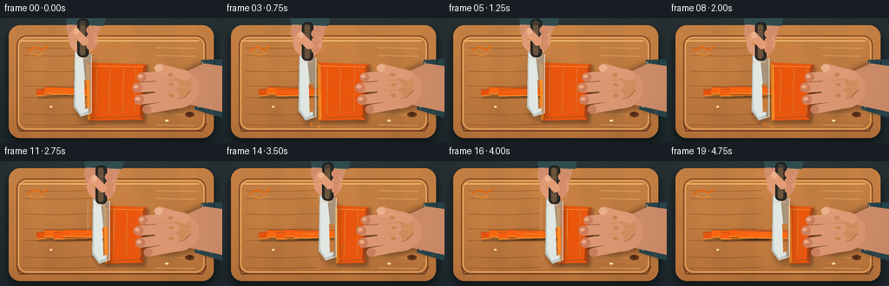
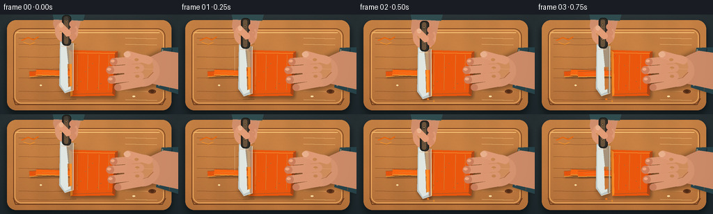

CODING AGENTS AS PIXEL WORLD MODELS
traex/GPT-5.6-Sol · motion_rationality_0015
点击播放 · 原生 RGB 像素
逐轮保存的候选
回放视频、检查图与代码变化。
每份候选均可单独播放。实际图片检查记录在下方工具轨迹中。
候选 01播放与检查图
点击播放 · 原生 RGB 像素


展开代码变化
--- 上一保存版本
+++ 本次保存版本
@@ -0,0 +1,285 @@
+from pathlib import Path
+import json, math
+import numpy as np
+from PIL import Image, ImageDraw, ImageFilter
+import artifact_io
+
+# Deterministic, hand-illustrated overhead food-preparation animation.
+ROOT = Path(__file__).resolve().parent
+spec = json.loads((ROOT / 'task_spec.json').read_text())
+W, H, N = spec['width'], spec['height'], spec['frames']
+S = 3
+w, h = W*S, H*S
+rng = np.random.default_rng(1501)
+
+def sc(v):
+ return int(round(v*S))
+
+def pts(seq, dx=0, dy=0):
+ return [(sc(x+dx), sc(y+dy)) for x,y in seq]
+
+def ellipse(draw, box, fill, outline=None, width=1):
+ draw.ellipse(tuple(sc(v) for v in box), fill=fill, outline=outline, width=sc(width) if outline else 1)
+
+def rounded(draw, box, radius, fill, outline=None, width=1):
+ draw.rounded_rectangle(tuple(sc(v) for v in box), radius=sc(radius), fill=fill,
+ outline=outline, width=sc(width) if outline else 1)
+
+def line(draw, seq, fill, width=1, joint='curve'):
+ draw.line(pts(seq), fill=fill, width=max(1,sc(width)), joint=joint)
+
+def polygon(draw, seq, fill):
+ draw.polygon(pts(seq), fill=fill)
+
+def capsule(draw, p1, p2, radius, fill, outline=None, width=1):
+ x1,y1=p1; x2,y2=p2
+ vx,vy=x2-x1,y2-y1
+ L=math.hypot(vx,vy) or 1
+ nx,ny=-vy/L*radius,vx/L*radius
+ poly=[(x1+nx,y1+ny),(x2+nx,y2+ny),(x2-nx,y2-ny),(x1-nx,y1-ny)]
+ draw.polygon(pts(poly), fill=fill)
+ ellipse(draw,(x1-radius,y1-radius,x1+radius,y1+radius),fill)
+ ellipse(draw,(x2-radius,y2-radius,x2+radius,y2+radius),fill)
+ if outline:
+ line(draw,[p1,p2],outline,2*radius+width)
+ line(draw,[p1,p2],fill,2*radius-width)
+
+def make_base():
+ yy,xx=np.mgrid[0:h,0:w]
+ # Dark slate countertop, subtly vignetted and textured.
+ radial=((xx-w*.48)/(w*.76))**2+((yy-h*.42)/(h*.92))**2
+ noise=rng.normal(0,1.8,(h,w))
+ arr=np.empty((h,w,3),dtype=np.float32)
+ arr[...,0]=38+7*(1-yy/h)-11*radial+noise
+ arr[...,1]=48+6*(1-yy/h)-10*radial+noise
+ arr[...,2]=51+5*(1-yy/h)-8*radial+noise
+ base=Image.fromarray(np.uint8(np.clip(arr,0,255)),'RGB').convert('RGBA')
+ # board shadow
+ sh=Image.new('RGBA',(w,h),(0,0,0,0)); sd=ImageDraw.Draw(sh)
+ rounded(sd,(8,13,248,143),14,(0,0,0,130))
+ sh=sh.filter(ImageFilter.GaussianBlur(sc(5)))
+ base.alpha_composite(sh)
+ # Wood gradient clipped by rounded mask.
+ mask=Image.new('L',(w,h),0); md=ImageDraw.Draw(mask)
+ rounded(md,(10,8,246,138),13,255)
+ n2=rng.normal(0,2.0,(h,w))
+ wood=np.empty((h,w,4),dtype=np.uint8)
+ grain=4*np.sin(xx/(S*17)+np.sin(yy/(S*13)))+2*np.sin(xx/(S*5.5))
+ wood[...,0]=np.clip(177 + 20*(1-yy/h)+grain+n2,0,255)
+ wood[...,1]=np.clip(111 + 18*(1-yy/h)+grain*.55+n2,0,255)
+ wood[...,2]=np.clip(57 + 11*(1-yy/h)+grain*.25+n2,0,255)
+ wood[...,3]=np.asarray(mask)
+ base.alpha_composite(Image.fromarray(wood,'RGBA'))
+ d=ImageDraw.Draw(base,'RGBA')
+ # board rim and routed juice groove
+ line(d,[(22,26),(229,26)],(255,204,126,95),1)
+ line(d,[(19,121),(22,130),(233,130),(238,121)],(91,47,23,100),1)
+ d.rounded_rectangle((sc(19),sc(20),sc(237),sc(130)),radius=sc(11),outline=(111,61,31,105),width=sc(1))
+ d.rounded_rectangle((sc(21),sc(22),sc(235),sc(128)),radius=sc(10),outline=(246,179,101,50),width=sc(1))
+ # Fine wood grain strokes and a knot.
+ for y0 in [34,43,62,77,93,111,123]:
+ off=float(rng.uniform(-2,2))
+ line(d,[(27,y0+off),(68,y0+off+1),(109,y0+off-.5)],(111,61,30,38),.7)
+ line(d,[(180,y0+off),(225,y0+off+1)],(255,210,139,38),.7)
+ ellipse(d,(213,108,224,114),(108,58,29,35))
+ ellipse(d,(216,109,221,113),(82,43,22,38))
+ # A few carrot peel curls at the upper-left edge, contextual but unobtrusive.
+ line(d,[(31,37),(40,33),(48,36),(55,32)],(226,105,20,175),2)
+ line(d,[(34,40),(43,43),(50,40)],(255,148,35,125),1)
+ # moisture highlights on the board
+ ellipse(d,(57,101,60,103),(255,221,165,35))
+ ellipse(d,(190,117,194,119),(255,221,165,28))
+ return base
+
+BASE=make_base()
+
+def rotated_stick(layer, cx, cy, sw, sh, angle, color=(232,91,18,255), seed=0):
+ # A softly beveled carrot baton and its contact shadow.
+ rr=math.radians(angle); ux,uy=math.cos(rr),math.sin(rr); nx,ny=-uy,ux
+ def corners(cxx,cyy,ww,hh):
+ return [(cxx+ux*hh/2+nx*ww/2,cyy+uy*hh/2+ny*ww/2),
+ (cxx+ux*hh/2-nx*ww/2,cyy+uy*hh/2-ny*ww/2),
+ (cxx-ux*hh/2-nx*ww/2,cyy-uy*hh/2-ny*ww/2),
+ (cxx-ux*hh/2+nx*ww/2,cyy-uy*hh/2+ny*ww/2)]
+ shad=Image.new('RGBA',(w,h),(0,0,0,0)); sdr=ImageDraw.Draw(shad)
+ sdr.polygon(pts(corners(cx+1.4,cy+2,sw+1,sh)),fill=(53,28,13,100))
+ shad=shad.filter(ImageFilter.GaussianBlur(sc(1.3))); layer.alpha_composite(shad)
+ d=ImageDraw.Draw(layer,'RGBA')
+ crn=corners(cx,cy,sw,sh)
+ d.polygon(pts(crn),fill=color)
+ # bright bevel on left long edge, dark bevel on right
+ line(d,[crn[3],crn[0]],(255,161,50,205),1.2)
+ line(d,[crn[1],crn[2]],(145,49,10,130),1.0)
+ # pale inner fiber
+ jitter=(seed%3-1)*.45
+ line(d,[(cx+nx*jitter-ux*sh*.36,cy+ny*jitter-uy*sh*.36),
+ (cx+nx*jitter-ux*sh*.05,cy+ny*jitter-uy*sh*.05)],(255,178,72,95),.55)
+ # end face
+ ex=cx+ux*sh/2; ey=cy+uy*sh/2
+ line(d,[(ex+nx*sw*.35,ey+ny*sw*.35),(ex-nx*sw*.35,ey-ny*sw*.35)],(255,183,78,210),1)
+
+
+def draw_carrot(layer, completed, frame):
+ d=ImageDraw.Draw(layer,'RGBA')
+ # Two batons are already prepared; newly made sticks line up in a natural progression.
+ rotated_stick(layer,72.5,84,7.2,61,-3.0,(224,82,14,255),1)
+ rotated_stick(layer,83.5,84,7.5,64,2.0,(242,100,17,255),2)
+ for k in range(completed):
+ # the fresh piece springs a few pixels away from the uncut stack
+ x=94.0 + 10.4*k
+ a=[-1.5,1.0,-.7,1.4][k]
+ y=84+[1,-1,0,1][k]
+ rotated_stick(layer,x,y,7.6,64,a,(239+min(k,2)*2,91+3*k,15,255),10+k)
+ # Main stack of carrot planks. Its left edge advances after every completed knife stroke.
+ left=99+10*completed
+ topL=(left,51); topR=(169,53); botR=(165,117); botL=(left+2,118)
+ # contact shadow
+ shadow=Image.new('RGBA',(w,h),(0,0,0,0)); sd=ImageDraw.Draw(shadow)
+ sd.polygon(pts([(left+2,54),(171,55),(167,121),(left+3,121)]),fill=(53,26,10,110))
+ shadow=shadow.filter(ImageFilter.GaussianBlur(sc(2))); layer.alpha_composite(shadow)
+ d=ImageDraw.Draw(layer,'RGBA')
+ d.polygon(pts([topL,topR,botR,botL]),fill=(228,84,13,255))
+ # side bevels and moist cut face
+ d.polygon(pts([(left,51),(left+4,54),(left+5,116),(left+2,118)]),fill=(255,142,35,230))
+ d.polygon(pts([(169,53),(165,117),(161,114),(165,55)]),fill=(160,48,7,180))
+ line(d,[(left+4,55),(165,56)],(255,169,56,175),1)
+ line(d,[(left+5,115),(162,113)],(126,37,8,100),1)
+ # longitudinal carrot fibers and natural speckles
+ for offs, alpha in [(12,90),(27,65),(43,70),(57,55)]:
+ x=left+offs
+ if x<165:
+ line(d,[(x,58),(x-.7,109)],(255,151,43,alpha),.65)
+ for j in range(10):
+ fx=left+6+((j*17)%max(8,int(162-left)))
+ fy=59+((j*23)%49)
+ ellipse(d,(fx,fy,fx+1.2,fy+1.0),(126,44,8,65))
+ # Fresh seam exactly under the blade on the impact frame.
+ if frame%5==2:
+ seam=107+10*(frame//5)
+ line(d,[(seam,53),(seam+1,117)],(255,190,72,230),1.0)
+
+
+def draw_left_hand(layer, completed):
+ # The stabilizing hand uses a safe curled-finger (claw) grip on the uncut stack.
+ d=ImageDraw.Draw(layer,'RGBA')
+ drift=min(completed,3)*0.7
+ # soft cast shadow
+ sh=Image.new('RGBA',(w,h),(0,0,0,0)); sd=ImageDraw.Draw(sh)
+ sd.polygon(pts([(258,51),(229,50),(204,62),(176,63),(164,72),(166,104),(196,107),(225,101),(258,113)],dy=2),fill=(37,20,14,100))
+ sh=sh.filter(ImageFilter.GaussianBlur(sc(3))); layer.alpha_composite(sh)
+ d=ImageDraw.Draw(layer,'RGBA')
+ # blue rolled sleeve at right
+ polygon(d,[(256,47),(232,48),(224,105),(256,115)],(39,67,73,255))
+ line(d,[(233,50),(228,103)],(99,128,126,170),2)
+ line(d,[(247,49),(243,110)],(21,43,48,140),1)
+ # forearm and palm
+ polygon(d,[(235,52),(256,55),(256,108),(233,103),(215,99),(211,63)],(202,137,103,255))
+ ellipse(d,(178,58,229,104),(211,145,110,255))
+ # palm highlights and crease
+ ellipse(d,(189,61,220,91),(226,162,126,115))
+ line(d,[(200,94),(212,91),(220,83)],(143,85,64,85),1)
+ # Four curled fingers pointing left. Distal tips remain visibly planted.
+ fingers=[(199,65,163+drift,68,5.4),(201,77,158+drift,80,5.6),
+ (201,89,160+drift,94,5.6),(203,99,169+drift,105,5.1)]
+ for idx,(x1,y1,x2,y2,r) in enumerate(fingers):
+ capsule(d,(x1,y1),(x2,y2),r,(214,147,111,255))
+ # warm underside at the carrot-contact tip
+ ellipse(d,(x2-r,y2-r,x2+r,y2+r),(198,126,94,235))
+ # neat short nail on upper fingers
+ if idx<3:
+ ellipse(d,(x2-r*.75,y2-r*.55,x2+r*.25,y2+r*.1),(235,183,154,210))
+ line(d,[(x2-r*.55,y2-r*.35),(x2+r*.05,y2-r*.12)],(255,214,184,110),.6)
+ # thumb across palm
+ capsule(d,(213,66),(184,58),5.7,(218,151,115,255))
+ ellipse(d,(177.8,53.5,187.5,61.5),(235,183,153,210))
+ # subtle knuckle highlights
+ for x0,y0 in [(196,66),(197,78),(197,90)]:
+ ellipse(d,(x0-3,y0-3,x0+3,y0+1),(242,181,143,55))
+
+
+def draw_knife_and_right_hand(layer, edge, z, loc):
+ # Height is represented by an up-left screen offset and an expanding cast shadow.
+ dy=-8.5*z; dx=-2.0*z
+ e=edge+dx
+ d=ImageDraw.Draw(layer,'RGBA')
+ # knife cast shadow: farther and softer when raised
+ sh=Image.new('RGBA',(w,h),(0,0,0,0)); sd=ImageDraw.Draw(sh)
+ blade=[(e-19+2+z*2,47+dy+3+z*4),(e+2+z*2,50+dy+3+z*4),
+ (e+1+z*2,118+dy+3+z*4),(e-11+z*2,122+dy+3+z*4),(e-20+z*2,111+dy+3+z*4)]
+ sd.polygon(pts(blade),fill=(25,18,14,int(85-20*z)))
+ sh=sh.filter(ImageFilter.GaussianBlur(sc(1.4+2*z))); layer.alpha_composite(sh)
+ d=ImageDraw.Draw(layer,'RGBA')
+ # Right forearm arriving from top and the hand holding the handle.
+ hx=e-9
+ polygon(d,[(hx-17,-5),(hx+24,-5),(hx+17,27+dy),(hx+12,42+dy),(hx-14,40+dy),(hx-20,21+dy)],(206,140,106,255))
+ # sleeve edge at top
+ polygon(d,[(hx-21,-4),(hx+27,-4),(hx+23,9),(hx-19,7)],(48,75,78,255))
+ line(d,[(hx-18,7),(hx+22,9)],(113,139,134,145),1)
+ ellipse(d,(hx-17,17+dy,hx+16,49+dy),(217,150,114,255))
+ ellipse(d,(hx-11,20+dy,hx+11,39+dy),(235,171,133,85))
+ # Steel blade, with a cool gradient simulated as panels.
+ blade_real=[(e-19,47+dy),(e,50+dy),(e,118+dy),(e-12,122+dy),(e-20,111+dy)]
+ d.polygon(pts(blade_real),fill=(184,193,191,255))
+ d.polygon(pts([(e-18,49+dy),(e-2,51+dy),(e-3,115+dy),(e-12,119+dy),(e-18,109+dy)]),fill=(218,224,219,255))
+ d.polygon(pts([(e-10,50+dy),(e,50+dy),(e,118+dy),(e-3,118+dy)]),fill=(145,158,159,150))
+ line(d,[(e,50+dy),(e,118+dy),(e-12,122+dy)],(250,251,237,235),.8)
+ line(d,[(e-17,54+dy),(e-5,55+dy)],(255,255,255,120),1)
+ # faint reflection of the carrot on lower steel
+ d.polygon(pts([(e-8,80+dy),(e-2,80+dy),(e-2,111+dy),(e-7,113+dy)]),fill=(236,116,34,42))
+ # dark chef-knife handle
+ rounded(d,(e-16,9+dy,e-3,53+dy),5,(45,42,37,255),outline=(21,22,20,255),width=1)
+ rounded(d,(e-13,11+dy,e-7,51+dy),3,(75,67,56,190))
+ for ry in [19,40]:
+ ellipse(d,(e-11.7,ry+dy-1.5,e-8.7,ry+dy+1.5),(184,177,153,230),outline=(28,28,25,180),width=1)
+ # fingers wrapping over the handle
+ for j,yy0 in enumerate([22,31,40]):
+ ellipse(d,(e-5.5,yy0+dy-5,e+4.5,yy0+dy+5),(207,137,103,255))
+ line(d,[(e-3,yy0+dy-3),(e+2,yy0+dy-1)],(238,179,143,95),.7)
+ # thumb diagonally across handle
+ capsule(d,(e-18,25+dy),(e-8,35+dy),4.7,(222,153,116,255))
+ ellipse(d,(e-20.5,20+dy,e-14,27+dy),(239,185,153,210))
+ # short movement accents only on the descending frame
+ if loc==1:
+ line(d,[(e-25,55+dy-5),(e-25,91+dy-5)],(247,230,193,58),1)
+ line(d,[(e+5,61+dy-3),(e+5,96+dy-3)],(255,245,218,44),.8)
+
+
+def make_frame(i):
+ im=BASE.copy()
+ cycle=i//5; loc=i%5
+ zvals=[1.0,.46,0.0,.50,.92]
+ z=zvals[loc]
+ # Knife remains over the current cut during the stroke, then rises and slides right.
+ base_edge=107+10*cycle
+ move=[0,0,0,1.8,6.0][loc]
+ edge=base_edge+move
+ completed=cycle+(1 if loc>=3 else 0)
+ food=Image.new('RGBA',(w,h),(0,0,0,0))
+ draw_carrot(food,completed,i)
+ im.alpha_composite(food)
+ # hand shadow and stabilizing grip are below knife but above food
+ hand=Image.new('RGBA',(w,h),(0,0,0,0))
+ draw_left_hand(hand,completed)
+ im.alpha_composite(hand)
+ knife=Image.new('RGBA',(w,h),(0,0,0,0))
+ draw_knife_and_right_hand(knife,edge,z,loc)
+ # Tiny carrot flecks kick away immediately after each cut.
+ kd=ImageDraw.Draw(knife,'RGBA')
+ if loc in (2,3):
+ ex=base_edge
+ ellipse(kd,(ex-6,121,ex-3,123),(245,118,20,210))
+ ellipse(kd,(ex+3,124,ex+5,126),(255,151,35,170))
+ im.alpha_composite(knife)
+ # Warm overhead light and restrained vignette unify the scene.
+ arr=np.asarray(im.convert('RGB')).astype(np.float32)
+ yy,xx=np.mgrid[0:h,0:w]
+ light=1.035-0.10*(((xx-w*.50)/(w*.78))**2+((yy-h*.48)/(h*.92))**2)
+ arr*=light[...,None]
+ arr=np.clip(arr,0,255).astype(np.uint8)
+ out=Image.fromarray(arr,'RGB').resize((W,H),Image.Resampling.LANCZOS)
+ return np.asarray(out,dtype=np.uint8)
+
+frames=np.stack([make_frame(i) for i in range(N)],axis=0)
+assert frames.shape==(N,H,W,3) and frames.dtype==np.uint8
+artifact_io.save(frames,ROOT)
+print(f'saved {N} RGB frames, {W}x{H}, to {ROOT}')
可观测工具轨迹
实际执行的命令与返回图片。
命令 1exit 0
/bin/bash -lc "cat prompt.txt && printf '\\n--- RULES ---\\n' && cat GENERATION_RULES.md && printf '\\n--- SPEC ---\\n' && cat task_spec.json"
命令 2exit 0
/bin/bash -lc "find . -maxdepth 2 -type f -printf '%p\\n' | sort && printf '\\n--- bins ---\\n' && command -v ffmpeg && command -v python3 && command -v blender || true"
命令 3exit 0
/bin/bash -lc 'cat artifact_io.py'
命令 4exit 0
/bin/bash -lc "cat > generate.py <<'PY'
from pathlib import Path
import json, math
import numpy as np
from PIL import Image, ImageDraw, ImageFilter
import artifact_io
# Deterministic, hand-illustrated overhead food-preparation animation.
ROOT = Path(__file__).resolve().parent
spec = json.loads((ROOT / 'task_spec.json').read_text())
W, H, N = spec['width'], spec['height'], spec['frames']
S = 3
w, h = W*S, H*S
rng = np.random.default_rng(1501)
def sc(v):
return int(round(v*S))
def pts(seq, dx=0, dy=0):
return [(sc(x+dx), sc(y+dy)) for x,y in seq]
def ellipse(draw, box, fill, outline=None, width=1):
draw.ellipse(tuple(sc(v) for v in box), fill=fill, outline=outline, width=sc(width) if outline else 1)
def rounded(draw, box, radius, fill, outline=None, width=1):
draw.rounded_rectangle(tuple(sc(v) for v in box), radius=sc(radius), fill=fill,
outline=outline, width=sc(width) if outline else 1)
def line(draw, seq, fill, width=1, joint='curve'):
draw.line(pts(seq), fill=fill, width=max(1,sc(width)), joint=joint)
def polygon(draw, seq, fill):
draw.polygon(pts(seq), fill=fill)
def capsule(draw, p1, p2, radius, fill, outline=None, width=1):
x1,y1=p1; x2,y2=p2
vx,vy=x2-x1,y2-y1
L=math.hypot(vx,vy) or 1
nx,ny=-vy/L*radius,vx/L*radius
poly=[(x1+nx,y1+ny),(x2+nx,y2+ny),(x2-nx,y2-ny),(x1-nx,y1-ny)]
draw.polygon(pts(poly), fill=fill)
ellipse(draw,(x1-radius,y1-radius,x1+radius,y1+radius),fill)
ellipse(draw,(x2-radius,y2-radius,x2+radius,y2+radius),fill)
if outline:
line(draw,[p1,p2],outline,2*radius+width)
line(draw,[p1,p2],fill,2*radius-width)
def make_base():
yy,xx=np.mgrid[0:h,0:w]
# Dark slate countertop, subtly vignetted and textured.
radial=((xx-w*.48)/(w*.76))**2+((yy-h*.42)/(h*.92))**2
noise=rng.normal(0,1.8,(h,w))
arr=np.empty((h,w,3),dtype=np.float32)
arr[...,0]=38+7*(1-yy/h)-11*radial+noise
arr[...,1]=48+6*(1-yy/h)-10*radial+noise
arr[...,2]=51+5*(1-yy/h)-8*radial+noise
base=Image.fromarray(np.uint8(np.clip(arr,0,255)),'RGB').convert('RGBA')
# board shadow
sh=Image.new('RGBA',(w,h),(0,0,0,0)); sd=ImageDraw.Draw(sh)
rounded(sd,(8,13,248,143),14,(0,0,0,130))
sh=sh.filter(ImageFilter.GaussianBlur(sc(5)))
base.alpha_composite(sh)
# Wood gradient clipped by rounded mask.
mask=Image.new('L',(w,h),0); md=ImageDraw.Draw(mask)
rounded(md,(10,8,246,138),13,255)
n2=rng.normal(0,2.0,(h,w))
wood=np.empty((h,w,4),dtype=np.uint8)
grain=4*np.sin(xx/(S*17)+np.sin(yy/(S*13)))+2*np.sin(xx/(S*5.5))
wood[...,0]=np.clip(177 + 20*(1-yy/h)+grain+n2,0,255)
wood[...,1]=np.clip(111 + 18*(1-yy/h)+grain*.55+n2,0,255)
wood[...,2]=np.clip(57 + 11*(1-yy/h)+grain*.25+n2,0,255)
wood[...,3]=np.asarray(mask)
base.alpha_composite(Image.fromarray(wood,'RGBA'))
d=ImageDraw.Draw(base,'RGBA')
# board rim and routed juice groove
line(d,[(22,26),(229,26)],(255,204,126,95),1)
line(d,[(19,121),(22,130),(233,130),(238,121)],(91,47,23,100),1)
d.rounded_rectangle((sc(19),sc(20),sc(237),sc(130)),radius=sc(11),outline=(111,61,31,105),width=sc(1))
d.rounded_rectangle((sc(21),sc(22),sc(235),sc(128)),radius=sc(10),outline=(246,179,101,50),width=sc(1))
# Fine wood grain strokes and a knot.
for y0 in [34,43,62,77,93,111,123]:
off=float(rng.uniform(-2,2))
line(d,[(27,y0+off),(68,y0+off+1),(109,y0+off-.5)],(111,61,30,38),.7)
line(d,[(180,y0+off),(225,y0+off+1)],(255,210,139,38),.7)
ellipse(d,(213,108,224,114),(108,58,29,35))
ellipse(d,(216,109,221,113),(82,43,22,38))
# A few carrot peel curls at the upper-left edge, contextual but unobtrusive.
line(d,[(31,37),(40,33),(48,36),(55,32)],(226,105,20,175),2)
line(d,[(34,40),(43,43),(50,40)],(255,148,35,125),1)
# moisture highlights on the board
ellipse(d,(57,101,60,103),(255,221,165,35))
ellipse(d,(190,117,194,119),(255,221,165,28))
return base
BASE=make_base()
def rotated_stick(layer, cx, cy, sw, sh, angle, color=(232,91,18,255), seed=0):
# A softly beveled carrot baton and its contact shadow.
rr=math.radians(angle); ux,uy=math.cos(rr),math.sin(rr); nx,ny=-uy,ux
def corners(cxx,cyy,ww,hh):
return [(cxx+ux*hh/2+nx*ww/2,cyy+uy*hh/2+ny*ww/2),
(cxx+ux*hh/2-nx*ww/2,cyy+uy*hh/2-ny*ww/2),
(cxx-ux*hh/2-nx*ww/2,cyy-uy*hh/2-ny*ww/2),
(cxx-ux*hh/2+nx*ww/2,cyy-uy*hh/2+ny*ww/2)]
shad=Image.new('RGBA',(w,h),(0,0,0,0)); sdr=ImageDraw.Draw(shad)
sdr.polygon(pts(corners(cx+1.4,cy+2,sw+1,sh)),fill=(53,28,13,100))
shad=shad.filter(ImageFilter.GaussianBlur(sc(1.3))); layer.alpha_composite(shad)
d=ImageDraw.Draw(layer,'RGBA')
crn=corners(cx,cy,sw,sh)
d.polygon(pts(crn),fill=color)
# bright bevel on left long edge, dark bevel on right
line(d,[crn[3],crn[0]],(255,161,50,205),1.2)
line(d,[crn[1],crn[2]],(145,49,10,130),1.0)
# pale inner fiber
jitter=(seed%3-1)*.45
line(d,[(cx+nx*jitter-ux*sh*.36,cy+ny*jitter-uy*sh*.36),
(cx+nx*jitter-ux*sh*.05,cy+ny*jitter-uy*sh*.05)],(255,178,72,95),.55)
# end face
ex=cx+ux*sh/2; ey=cy+uy*sh/2
line(d,[(ex+nx*sw*.35,ey+ny*sw*.35),(ex-nx*sw*.35,ey-ny*sw*.35)],(255,183,78,210),1)
def draw_carrot(layer, completed, frame):
d=ImageDraw.Draw(layer,'RGBA')
# Two batons are already prepared; newly made sticks line up in a natural progression.
rotated_stick(layer,72.5,84,7.2,61,-3.0,(224,82,14,255),1)
rotated_stick(layer,83.5,84,7.5,64,2.0,(242,100,17,255),2)
for k in range(completed):
# the fresh piece springs a few pixels away from the uncut stack
x=94.0 + 10.4*k
a=[-1.5,1.0,-.7,1.4][k]
y=84+[1,-1,0,1][k]
rotated_stick(layer,x,y,7.6,64,a,(239+min(k,2)*2,91+3*k,15,255),10+k)
# Main stack of carrot planks. Its left edge advances after every completed knife stroke.
left=99+10*completed
topL=(left,51); topR=(169,53); botR=(165,117); botL=(left+2,118)
# contact shadow
shadow=Image.new('RGBA',(w,h),(0,0,0,0)); sd=ImageDraw.Draw(shadow)
sd.polygon(pts([(left+2,54),(171,55),(167,121),(left+3,121)]),fill=(53,26,10,110))
shadow=shadow.filter(ImageFilter.GaussianBlur(sc(2))); layer.alpha_composite(shadow)
d=ImageDraw.Draw(layer,'RGBA')
d.polygon(pts([topL,topR,botR,botL]),fill=(228,84,13,255))
# side bevels and moist cut face
d.polygon(pts([(left,51),(left+4,54),(left+5,116),(left+2,118)]),fill=(255,142,35,230))
d.polygon(pts([(169,53),(165,117),(161,114),(165,55)]),fill=(160,48,7,180))
line(d,[(left+4,55),(165,56)],(255,169,56,175),1)
line(d,[(left+5,115),(162,113)],(126,37,8,100),1)
# longitudinal carrot fibers and natural speckles
for offs, alpha in [(12,90),(27,65),(43,70),(57,55)]:
x=left+offs
if x<165:
line(d,[(x,58),(x-.7,109)],(255,151,43,alpha),.65)
for j in range(10):
fx=left+6+((j*17)%max(8,int(162-left)))
fy=59+((j*23)%49)
ellipse(d,(fx,fy,fx+1.2,fy+1.0),(126,44,8,65))
# Fresh seam exactly under the blade on the impact frame.
if frame%5==2:
seam=107+10*(frame//5)
line(d,[(seam,53),(seam+1,117)],(255,190,72,230),1.0)
def draw_left_hand(layer, completed):
# The stabilizing hand uses a safe curled-finger (claw) grip on the uncut stack.
d=ImageDraw.Draw(layer,'RGBA')
drift=min(completed,3)*0.7
# soft cast shadow
sh=Image.new('RGBA',(w,h),(0,0,0,0)); sd=ImageDraw.Draw(sh)
sd.polygon(pts([(258,51),(229,50),(204,62),(176,63),(164,72),(166,104),(196,107),(225,101),(258,113)],dy=2),fill=(37,20,14,100))
sh=sh.filter(ImageFilter.GaussianBlur(sc(3))); layer.alpha_composite(sh)
d=ImageDraw.Draw(layer,'RGBA')
# blue rolled sleeve at right
polygon(d,[(256,47),(232,48),(224,105),(256,115)],(39,67,73,255))
line(d,[(233,50),(228,103)],(99,128,126,170),2)
line(d,[(247,49),(243,110)],(21,43,48,140),1)
# forearm and palm
polygon(d,[(235,52),(256,55),(256,108),(233,103),(215,99),(211,63)],(202,137,103,255))
ellipse(d,(178,58,229,104),(211,145,110,255))
# palm highlights and crease
ellipse(d,(189,61,220,91),(226,162,126,115))
line(d,[(200,94),(212,91),(220,83)],(143,85,64,85),1)
# Four curled fingers pointing left. Distal tips remain visibly planted.
fingers=[(199,65,163+drift,68,5.4),(201,77,158+drift,80,5.6),
(201,89,160+drift,94,5.6),(203,99,169+drift,105,5.1)]
for idx,(x1,y1,x2,y2,r) in enumerate(fingers):
capsule(d,(x1,y1),(x2,y2),r,(214,147,111,255))
# warm underside at the carrot-contact tip
ellipse(d,(x2-r,y2-r,x2+r,y2+r),(198,126,94,235))
# neat short nail on upper fingers
if idx<3:
ellipse(d,(x2-r*.75,y2-r*.55,x2+r*.25,y2+r*.1),(235,183,154,210))
line(d,[(x2-r*.55,y2-r*.35),(x2+r*.05,y2-r*.12)],(255,214,184,110),.6)
# thumb across palm
capsule(d,(213,66),(184,58),5.7,(218,151,115,255))
ellipse(d,(177.8,53.5,187.5,61.5),(235,183,153,210))
# subtle knuckle highlights
for x0,y0 in [(196,66),(197,78),(197,90)]:
ellipse(d,(x0-3,y0-3,x0+3,y0+1),(242,181,143,55))
def draw_knife_and_right_hand(layer, edge, z, loc):
# Height is represented by an up-left screen offset and an expanding cast shadow.
dy=-8.5*z; dx=-2.0*z
e=edge+dx
d=ImageDraw.Draw(layer,'RGBA')
# knife cast shadow: farther and softer when raised
sh=Image.new('RGBA',(w,h),(0,0,0,0)); sd=ImageDraw.Draw(sh)
blade=[(e-19+2+z*2,47+dy+3+z*4),(e+2+z*2,50+dy+3+z*4),
(e+1+z*2,118+dy+3+z*4),(e-11+z*2,122+dy+3+z*4),(e-20+z*2,111+dy+3+z*4)]
sd.polygon(pts(blade),fill=(25,18,14,int(85-20*z)))
sh=sh.filter(ImageFilter.GaussianBlur(sc(1.4+2*z))); layer.alpha_composite(sh)
d=ImageDraw.Draw(layer,'RGBA')
# Right forearm arriving from top and the hand holding the handle.
hx=e-9
polygon(d,[(hx-17,-5),(hx+24,-5),(hx+17,27+dy),(hx+12,42+dy),(hx-14,40+dy),(hx-20,21+dy)],(206,140,106,255))
# sleeve edge at top
polygon(d,[(hx-21,-4),(hx+27,-4),(hx+23,9),(hx-19,7)],(48,75,78,255))
line(d,[(hx-18,7),(hx+22,9)],(113,139,134,145),1)
ellipse(d,(hx-17,17+dy,hx+16,49+dy),(217,150,114,255))
ellipse(d,(hx-11,20+dy,hx+11,39+dy),(235,171,133,85))
# Steel blade, with a cool gradient simulated as panels.
blade_real=[(e-19,47+dy),(e,50+dy),(e,118+dy),(e-12,122+dy),(e-20,111+dy)]
d.polygon(pts(blade_real),fill=(184,193,191,255))
d.polygon(pts([(e-18,49+dy),(e-2,51+dy),(e-3,115+dy),(e-12,119+dy),(e-18,109+dy)]),fill=(218,224,219,255))
d.polygon(pts([(e-10,50+dy),(e,50+dy),(e,118+dy),(e-3,118+dy)]),fill=(145,158,159,150))
line(d,[(e,50+dy),(e,118+dy),(e-12,122+dy)],(250,251,237,235),.8)
line(d,[(e-17,54+dy),(e-5,55+dy)],(255,255,255,120),1)
# faint reflection of the carrot on lower steel
d.polygon(pts([(e-8,80+dy),(e-2,80+dy),(e-2,111+dy),(e-7,113+dy)]),fill=(236,116,34,42))
# dark chef-knife handle
rounded(d,(e-16,9+dy,e-3,53+dy),5,(45,42,37,255),outline=(21,22,20,255),width=1)
rounded(d,(e-13,11+dy,e-7,51+dy),3,(75,67,56,190))
for ry in [19,40]:
ellipse(d,(e-11.7,ry+dy-1.5,e-8.7,ry+dy+1.5),(184,177,153,230),outline=(28,28,25,180),width=1)
# fingers wrapping over the handle
for j,yy0 in enumerate([22,31,40]):
ellipse(d,(e-5.5,yy0+dy-5,e+4.5,yy0+dy+5),(207,137,103,255))
line(d,[(e-3,yy0+dy-3),(e+2,yy0+dy-1)],(238,179,143,95),.7)
# thumb diagonally across handle
capsule(d,(e-18,25+dy),(e-8,35+dy),4.7,(222,153,116,255))
ellipse(d,(e-20.5,20+dy,e-14,27+dy),(239,185,153,210))
# short movement accents only on the descending frame
if loc==1:
line(d,[(e-25,55+dy-5),(e-25,91+dy-5)],(247,230,193,58),1)
line(d,[(e+5,61+dy-3),(e+5,96+dy-3)],(255,245,218,44),.8)
def make_frame(i):
im=BASE.copy()
cycle=i//5; loc=i%5
zvals=[1.0,.46,0.0,.50,.92]
z=zvals[loc]
# Knife remains over the current cut during the stroke, then rises and slides right.
base_edge=107+10*cycle
move=[0,0,0,1.8,6.0][loc]
edge=base_edge+move
completed=cycle+(1 if loc>=3 else 0)
food=Image.new('RGBA',(w,h),(0,0,0,0))
draw_carrot(food,completed,i)
im.alpha_composite(food)
# hand shadow and stabilizing grip are below knife but above food
hand=Image.new('RGBA',(w,h),(0,0,0,0))
draw_left_hand(hand,completed)
im.alpha_composite(hand)
knife=Image.new('RGBA',(w,h),(0,0,0,0))
draw_knife_and_right_hand(knife,edge,z,loc)
# Tiny carrot flecks kick away immediately after each cut.
kd=ImageDraw.Draw(knife,'RGBA')
if loc in (2,3):
ex=base_edge
ellipse(kd,(ex-6,121,ex-3,123),(245,118,20,210))
ellipse(kd,(ex+3,124,ex+5,126),(255,151,35,170))
im.alpha_composite(knife)
# Warm overhead light and restrained vignette unify the scene.
arr=np.asarray(im.convert('RGB')).astype(np.float32)
yy,xx=np.mgrid[0:h,0:w]
light=1.035-0.10*(((xx-w*.50)/(w*.78))**2+((yy-h*.48)/(h*.92))**2)
arr*=light[...,None]
arr=np.clip(arr,0,255).astype(np.uint8)
out=Image.fromarray(arr,'RGB').resize((W,H),Image.Resampling.LANCZOS)
return np.asarray(out,dtype=np.uint8)
frames=np.stack([make_frame(i) for i in range(N)],axis=0)
assert frames.shape==(N,H,W,3) and frames.dtype==np.uint8
artifact_io.save(frames,ROOT)
print(f'saved {N} RGB frames, {W}x{H}, to {ROOT}')
PY
python3 generate.py
ls -l pixels.npz index.html inspection.png transition_check.png frames/00.png frames/19.png"保存候选 1 份；完成命令 4 次；可验证图片返回 0 张。原始 API 响应与完整日志保留在本地。